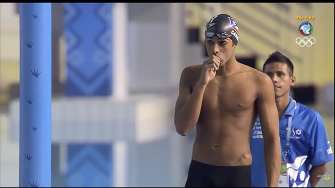
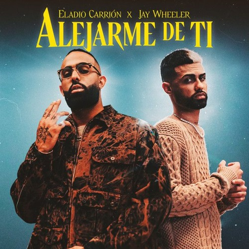

Eladio Carrión es un cantante, rapero y compositor puertorriqueño, conocido por su estilo único que fusiona el trap, el reguetón y el rap, y por ser uno de los artistas más relevantes en la escena urbana latinoamericana. Nació el 14 de noviembre de 1994 en San Juan, Puerto Rico.
 Eladio Carrión creció en Puerto Rico, donde desde joven estuvo influenciado por la música urbana. A temprana edad se interesó por el rap y la cultura hiphop, y comenzó a escribir sus propias canciones. Su afición por la música lo llevó a explorar diversos géneros urbanos, pero fue el trap y el reguetón lo que lo catapultó al éxito. También desde la adolescencia fue nadador olímpico en el equipo de Puerto Rico, llegando a estar cerca de clasificar a los Juegos Olímpicos, pero se decantó en seguir su sueño desde pequeño que era ser cantante.

Su carrera comenzó a despegar a partir de 2017, cuando comenzó a compartir su música en plataformas digitales. En ese mismo año, publicó su primer
proyecto importante, el EP "Dímelo", que llamó la atención de la audiencia y de otros artistas de la escena urbana. Sin embargo, fue su mixtape
"Eladio Carrión: El Héroe" (2019) el que consolidó su carrera y lo posicionó como una de las figuras emergentes del género.
Eladio Carrión ha trabajado en colaboración con muchos artistas reconocidos del reguetón, trap y hip-hop, como Bad Bunny,
Ozuna, Anuel AA, Rauw Alejandro, Yandel y Jhay Cortez, entre otros.
Estas colaboraciones lo han ayudado a expandir su presencia tanto en Puerto Rico como internacionalmente.
Eladio Carrión ha sido reconocido por su estilo auténtico y su habilidad para mezclar el trap con melodías pegajosas, lo que le ha permitido
ganar una gran cantidad de seguidores. A menudo sus letras abordan temas como la superación personal, las vivencias en la calle, las relaciones personales
y la vida de lujo.
Uno de sus proyectos más importantes es su álbum "Monarca" (2020), que fue un éxito de ventas y fue bien recibido tanto por la crítica como por los fanáticos.
Además, Eladio ha lanzado otros trabajos notables como "3:33" (2022), que siguió consolidando su carrera y su lugar en la escena urbana global.
Pero uno de los temas que más marca en su carrera y en el género urbano es 'Kemba Walker', con la colaboración de Bad Bunny, nos hace referencia al jugador de
la NBA Kemba, haciendo también alusión al nombre de su mascota, la canción nos hace referencia a la vida entre el barrio bajo como puede ser el Bronx, de jugar en
las canchas de cemento a meter el salto a las canchas de la NBA gracias a la universidad y salir en el Draft. El resto de la canción nos narra la vida de lujos
gracias a la NBA.
 Eladio Carrión ha sido una de las figuras clave en el crecimiento del trap y el reguetón, especialmente en su vertiente más melódica y experimental.
A través de su música, ha logrado conectar con una audiencia joven y diversa, que lo considera una de las voces más frescas del género.
A pesar de su corta edad, Eladio ya tiene un legado que lo coloca entre los artistas más influyentes de la música urbana contemporánea.
Eladio Carrión ha sido una de las figuras clave en el crecimiento del trap y el reguetón, especialmente en su vertiente más melódica y experimental.
A través de su música, ha logrado conectar con una audiencia joven y diversa, que lo considera una de las voces más frescas del género.
A pesar de su corta edad, Eladio ya tiene un legado que lo coloca entre los artistas más influyentes de la música urbana contemporánea.
Carrión es conocido por su carácter reservado, pero en redes sociales suele compartir momentos de su vida cotidiana y su estilo de vida, lo que le ha permitido mantener una relación cercana con sus seguidores. Además, ha sido muy activo en cuanto a su apoyo a su comunidad y ha sido un defensor de causas sociales en Puerto Rico. En resumen, Eladio Carrión es un talento emergente que ha logrado destacar en la música urbana con su propuesta única, y sigue siendo un referente para muchos jóvenes en América Latina y más allá.
Realizado por: José García Torrescusa & Francisco José Zamora González